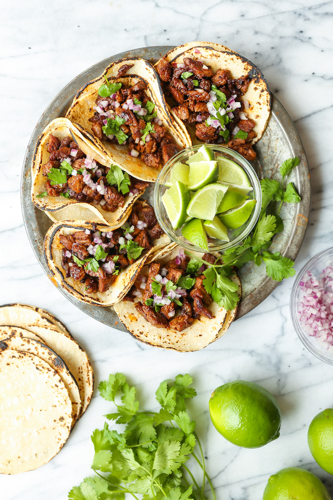

Easy, quick, authentic carne asada street tacos you can now make right at home! Top with onion, cilantro + fresh lime juice! SO GOOD!
Just follow this recipe and you'll never make boring tacos again!